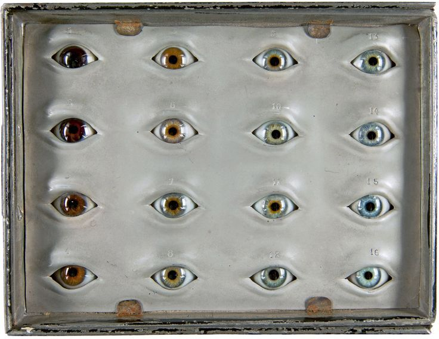
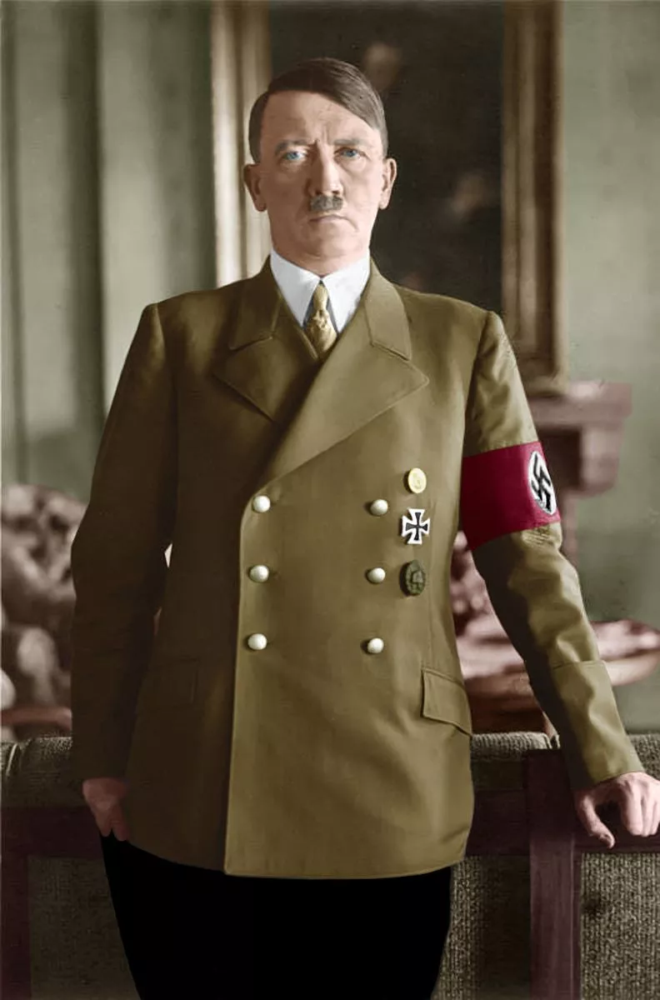
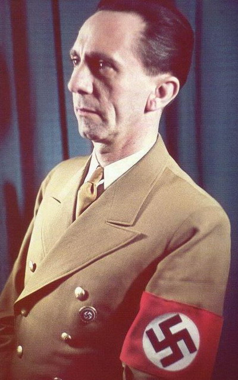
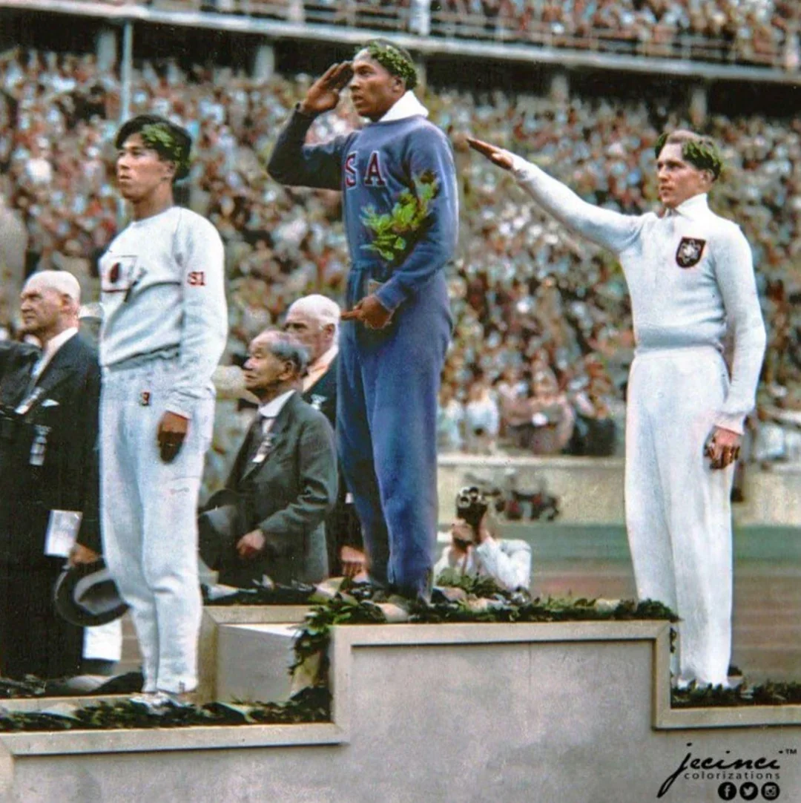

點擊上方選單切換語言
在 1930 年代的德國，一個人的社會命運與生死存亡，不再由他的道德或才智決定，而是荒謬地取決於他是否擁有「金色的頭髮」與「碧藍的雙眼」。 納粹政權透過極端簡化的視覺色碼，宣稱只有符合北歐體型樣貌的人才是純粹的「雅利安超人（Herrenmensch）」。
然而，這場追求「極致純血視覺」的政治狂熱，背後卻充斥著體質人類學的深刻荒謬、宣傳高層自身的長相打臉，以及無數令人啼笑皆非的歷史諷刺。
納粹帝國宣傳部所構建的理想雅利安人（Aryan）公式極其僵化：金髮、碧眼、高大體魄、狹長頭型。

▲ 納粹種族優生學者使用的虹膜顏色比對盤（Augenfarbentafel）。在當時，如果個體的眼睛被判定「不夠藍」，就可能在血統檔案中被劃歸為劣化階層。
被納粹視為「優越神聖」的生理特徵，在現代遺傳學與演化生物學眼中，只不過是高緯度環境天擇下的適應性突變代價：
人類虹膜中根本不存在任何「藍色色素」。藍眼個體的虹膜基質缺乏真黑素沉積，進入眼球的光線短波長部分在基質中產生了瑞利散射（Rayleigh Scattering），反射出藍色視覺效果。遺傳學研究證實，全球所有的藍眼人群，都源自約六千至一萬年前近黑海地區單一祖先身上 HERC2/OCA2 基因調控區的突變，純屬中性演化特徵。
在終年陰雨、紫外線（UVB）極其稀微的歐洲中高緯度地區，極度減少黑色素（包括皮膚、毛髮與眼睛）是為了最大程度吸收微弱陽光以合成足夠的維生素 D，防止佝僂病與骨骼畸形。這是一種極端緯度下的生存代價，代價則是對紫外線極其脆弱、極易曬傷與罹患皮膚癌。
演化生物學結論： 自然界從未有過「單一純種優越」的法則。基因庫的高度多樣性（混血與基因流動）才是物種抵禦疾病與環境劇變的強韌根基；納粹企圖以政治篩檢追求的「視覺單一化」，在遺傳演化上無異於自掘墳墓的近親弱化。
最反諷的是：瘋狂在全國推行「金髮碧眼、高大壯碩」標準的納粹決策核心，其自身長相幾乎全軍覆沒，無一人能通過他們自己頒布的審查尺標：
| 歷史人物 | 官方鼓吹之「理想雅利安」 | 真實生理硬體 | 荒謬的視覺矛盾 |
|---|---|---|---|
| 阿道夫·希特勒 (Adolf Hitler) |
金髮、高挑、北歐長頭型 | 深棕髮、中等身材 (約 173 cm) | 身為帝國元首，完全不具備自己手下海報所宣傳的「金色雄壯英雄」樣貌。 |
| 約瑟夫·戈培爾 (Joseph Goebbels) |
體魄健美、日耳曼戰士體魄 | 黑髮、身材矮小 (約 165 cm)、天生右足內翻跛行 | 帝國宣傳部長的生理特徵，若按照納粹優生絕育法案，甚至符合「劣質肉體」的改良處置標準。 |
| 海因里希·希姆萊 (Heinrich Himmler) |
冷酷北歐神話狂戰士外型 | 圓臉、溜肩微胖、高度近視配厚眼鏡 | 親衛隊（SS）最高領袖的外形更接近一名刻板平庸的小文員，全無戰士氣概。 |

▲ 阿道夫·希特勒：深棕色頭髮與平庸身材，與宣傳畫中的金髮戰士截然相反。

▲ 約瑟夫·戈培爾：黑髮、矮小且右腿跛行，親手打造了自己完全無法符合的審美神話。
▲ 海因里希·希姆萊：親衛隊人種純潔性的審查者，本人卻頂著一張毫無北歐稜角的微胖圓臉。
二戰時期流傳於柏林民間的政治嘲弄：
「真正的雅利安人應該像希特勒一樣金髮，像戈培爾一樣高大，像戈林一樣苗條！」
這句庶民笑話用最精準的黑色幽默，戳穿了納粹體系自欺欺人的視覺遮羞布。
種族主義最深層的破產，不僅在於高層長相的矛盾，更在於其種族審查專家在面對真實人臉時，完全無法區分「雅利安人」與「猶太人」，留下了兩起載入史冊的傳世笑柄：
1935 年，宣傳部長戈培爾發起全德競賽，要選出代表帝國未來的「最完美雅利安嬰兒（The Perfect Aryan Baby）」。最終獲獎的照片被印製成大量宣傳明信片、海報，甚至直接登上納粹家庭雜誌《Sonne ins Haus》的封面。
殘酷真相：這名被全納粹德國奉為純血典範的嬰兒黑斯·塔夫特（Hessy Levinsons Taft），其父母是來自拉脫維亞的正統猶太聲樂家！當時柏林的攝影師 Hans Ballin 明知嬰兒是猶太人，故意將照片寄去參賽以嘲弄納粹的種族偽科學。納粹審查委員會與戈培爾本人反覆過濾了成千上萬名嬰兒，最終挑選了一名純種猶太嬰兒作為帝國純潔性的圖騰。
1939 年二戰爆發初期，納粹官方報紙《柏林日報》（Berliner Tageblatt）在頭版刊登了一名英挺英俊、金髮立體、頭戴鋼盔的國防軍士兵特寫，斗大標題寫著：「理想的德國士兵（The Ideal German Soldier）」。該照片隨後被國防軍廣泛印作徵兵海報與樣板教材。
殘酷真相：這位「完美日耳曼戰士」名叫維爾納·戈德堡（Werner Goldberg），他的父親是一名純種猶太人。按照紐倫堡法案，戈德堡在法律上是第一級混血兒（Mischling）。納粹宣傳機器在全國鋪天蓋地張貼這張面孔，卻絲毫未意識到他們正在向全歐洲推崇一位猶太青年的五官。
這兩起世紀打臉事件從事實層面證明：人類的外貌特徵是連續分佈的幾何光譜，根本不存在所謂封閉、純粹、可肉眼驗證的「優等雅利安臉」。納粹的眼睛測量儀與頭骨卡尺，本質上只是一場自我催眠的政治巫術。
納粹視覺恐怖主義的悲劇在於：當「金髮碧眼」被推上唯一的神壇，剩下的龐大深髮日耳曼同胞立刻陷入自危。
▲ 當時的所謂「人類學家」正用機械儀器對市民進行頭骨測量，將活生生的人性與尊嚴簡化為冰冷的意識形態數字。
1936 年柏林奧運原本被希特勒視為向全球展示「雅利安體質絕對優越」的國家級櫥窗，然而這個耗費巨資搭設的種族主義舞台，卻被非裔美國選手傑西·歐文斯（Jesse Owens）一舉擊得粉碎。

▲ 歐文斯在柏林最高頒獎台上的致敬，是 20 世紀體育史對種族優生學最響亮的一記耳光。
二戰結束後的當代影視工業，不斷以黑色幽默與解構主義撕開納粹視覺宣傳的虛偽外衣：
無論是第三帝國狂熱打造的「金髮碧眼雅利安神話」，還是近現代全球影視中對「非歐裔高加索人」的視覺忽視，抑或是布盧門巴赫政治性發明的「黃種人色碼」，其運作底層皆如出一轍：試圖用極度簡化、非黑即白的扁平視覺標籤，暴力掩蓋生物多樣性與人類經驗的真實複雜度。
「真正定義一個人的，從來不是他眼球中瑞利散射的波長，而是他在看透歷史與權力的虛妄之後，用何種視角審視這個真實、多樣且不容簡化的世界。」